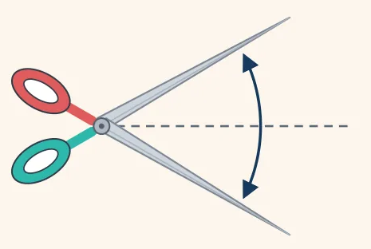

מספריים פתוחים — היגדים והשלמת משפטים
חוברת זוויות לכיתה ז — דפי עבודה
7
לפניכם ציור של מספריים פתוחים. סמנו את כל ההיגדים הנכונים לפי הציור.

הזווית שבין להבי המספריים היא זווית חדה.
הזווית שבין להבי המספריים מהווה שני שלישים מזווית ישרה.
הזווית גדולה פי 2 מזווית של 30°.
אם נוסיף לזווית 30°, תתקבל זווית ישרה.
הזווית קטנה מ-45°.
השלימו את המשפטים לפי ציור המספריים. כתבו בכל מקום את המילה או הביטוי המתאימים.
א.הזווית בין להבי המספריים היא זווית .
ב.הזווית שבין להבי המספריים גדולה ב- מזווית של 30°.
ג.הזווית שבין להבי המספריים גדולה פי מזווית של 30°.
ד.אם נוסיף לזווית עוד 30°, נקבל זווית .
ה.הזווית שבין להבי המספריים קטנה ב- מזווית ישרה.
מחסן מילים
חדה
30°
2
ישרה
חצי